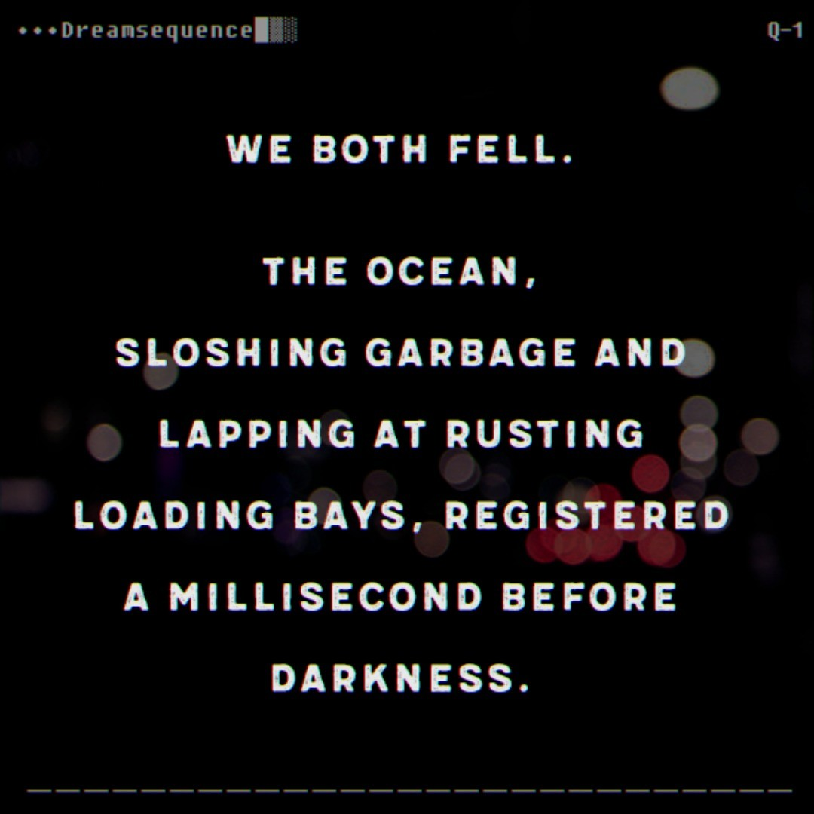

Hainan is not for humans. Neon shipping logo afterimages burned into my retinas as I walked the skyways and ports. Sleep was ushered in with the dull grind of industry penetrating every bone of my body. Weeks became a slideshow of commerce, jumpy, flickering locales and logos rushing by at just under 12 frames per second.
She was here tonight, and I hoped I would be too. It’s the same feeling every time, drawn along by the wire of subconscious instinct, precision engineered since I was less than a clump of cells… but you can’t program the conscious mind. At least that will always be one’s own. Stepping onto the catwalk, a China Container Lines hologram washed over me and enveloped the departing drone. I walked towards the sea, and her. 20 stories below, cranes groaned and arc lamps flickered. The rooftop appeared, backup generators and air conditioning units dotting the artificial horizon. The access stairwell jutted up, a single tree on the sheet metal hilltop. Its door creaked open and our eyes locked, though her hood hid all but a smile. That round, perfect face split by a maniacal lopsided grin, silhouette eclipsing the fluorescent wash of the stairwell for an eternity before reality caught up. Tape fast-forwarded as she executed a dozen actions at once, blurring towards me, past me, through me, back down the stairwell and in every direction across the rooftop.
The interface clicked and programming took over. Walking through the silent cacophony towards the horizon, the projections began to leap over the side of the building. I took a deep breath and opened my eyes. They were gone. She was there. I eyed the radioactive blue glint of the canister and sprinted. Never losing her grin, she broke into a jog and vaulted the guardrail a frame before I reached her.

• • •
A rainbow on one horizon. Dull grey glow behind. And the gradient of midnight darkness inbetween. Sensory inputs were blurred together and I struggled to parse them back to reality. My feet plodded forward against my will, sloshing warm, waist-deep brinewater, sinking into soft sand. The scent of acrid pollution was slowly being replaced by that of the open ocean. My vision cleared. I was among a group of five monks. Orange robes whipped through the air against dark skin and swirled into the water. A ring of white orbs surrounded each of us, buoys floating on the water, regularly emitting some subsonic pulse to keep our legs moving. Hainan was miles behind us and ahead burned a kaleidoscopic spectrum of colour on the shores of Indochina.
Looking between the monks, she was there. I knew she would be. Her smile didn’t survive the fall, the hood was gone, the hair tousled and matted, but finally the light of the horizons could reflect off those delirious eyes. Our story was not done, but I needed context. Straining muscles, pulling against the subsonic pulses, grinding just a single joint… and I could flip the subdermal switch. Blue-white flash — interface projected before my eyes. The monks pleaded in Sanskrit but I already had what I needed, speed of neurons no longer constrained by muscle. Map: 20 kilometres off the coast of Hainan. Offset: 3 meters northwest. Passcode… Cath. Lock. A blinding flash from orbit and she was gone.
Floating would have been the natural result, but legs machined onwards. One of the monks mustered some English. “30 hours.” A woman with a ragged madman in tow passed in the opposite direction. Blackness returned.
• • •
The water laps at me from below and incense chokes down from above. I am alive. Blazing technicolour lights adorn skyscraper high temples as I stumble forward from sand to grass. Dazed throngs process in curves along unseen paths. Reason is lost. A beggar approaches, chanting rhythmically. I fumble open a drypouch and absurdly apologise for only being able to offer Euros. Coins slip through my trembling fingers and roll beneath a row of pews. I fall to my knees, grasping in the dark, but a man has already retrieved them.
Look. Up.
I follow him back to a temple, past facsimiles of wailing babies, writhing in the sand of an incense pit. He opens an umbrella and her plush cat falls into my arms. Emotions crash into me and a thousand screams are immediately plugged up inside. The waves are all I’ve known for days, but now my legs will not obey. “Take me back to Hainan!” I plead, but they only carry me between the grey and the rainbow, into the darkness.
Hainan is not for humans.
END TRANSMISSION